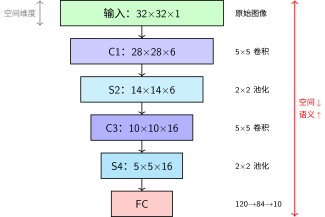
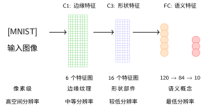

LeNet-5架构详解#
卷积神经网络中我们学习了CNN的核心机制：局部感受野、权值共享、参数效率。本节我们将分析第一个成功的CNN架构——LeNet-5，看这些理论如何转化为工程实践。
历史背景：从实验室到银行#
LeNet-5由Yann LeCun等人于1998年提出[LBBH98]，是神经网络发展史上的里程碑：
开创性：首次证明CNN可以实用化，不只是理论玩具
工业应用：成功部署于美国银行系统，处理手写支票识别（每天处理数百万张）
持久影响：其设计思想（卷积→池化→卷积→池化→全连接）至今仍在ResNet、EfficientNet等现代架构中使用
这证明了卷积神经网络中讨论的归纳偏置（Inductive Bias）——通过架构设计引入先验知识——不仅是理论优雅，更是工程实用的关键。
LeNet-5架构概述#
LeNet-5架构
具体参数配置：
层类型 |
输出尺寸 |
核大小/参数 |
激活函数 |
|---|---|---|---|
输入层 |
32×32×1 |
- |
- |
卷积层C1 |
28×28×6 |
5×5, 6个滤波器 |
Tanh |
池化层S2 |
14×14×6 |
2×2, 平均池化 |
- |
卷积层C3 |
10×10×16 |
5×5, 16个滤波器 |
Tanh |
池化层S4 |
5×5×16 |
2×2, 平均池化 |
- |
全连接层C5 |
120 |
5×5×16 → 120 |
Tanh |
全连接层F6 |
84 |
120 → 84 |
Tanh |
输出层 |
10 |
84 → 10 |
Softmax |
网络结构#
LeNet-5的经典架构包含以下层：
金字塔视角：数据流的维度变化#

LeNet-5 金字塔架构：从图像到类别
金字塔的核心洞察：
空间维度递减：32×32 → 5×5（缩小64倍）
特征通道递增：1 → 6 → 16（语义丰富度提升）
参数量集中：卷积层仅占3%参数，全连接层占97%
PyTorch实现#
原始LeNet-5实现#
import torch
import torch.nn as nn
import torch.nn.functional as F
class LeNet5(nn.Module):
def __init__(self, num_classes=10):
super(LeNet5, self).__init__()
# 第一个卷积块：C1 + S2
self.conv1 = nn.Conv2d(1, 6, kernel_size=5, padding=0)
self.pool1 = nn.AvgPool2d(kernel_size=2, stride=2)
# 第二个卷积块：C3 + S4
self.conv2 = nn.Conv2d(6, 16, kernel_size=5, padding=0)
self.pool2 = nn.AvgPool2d(kernel_size=2, stride=2)
# 全连接层
self.fc1 = nn.Linear(16 * 5 * 5, 120)
self.fc2 = nn.Linear(120, 84)
self.fc3 = nn.Linear(84, num_classes)
def forward(self, x):
# 输入：1x28x28（MNIST标准尺寸）
# C1：卷积层，1x28x28 -> 6x24x24
# 使用5x5卷积核（比{cnn-basics}中的3x3更大，感受野更强）
# 参数量：6 × (5×5×1 + 1) = 156（{ref}`cnn-basics`中的参数共享机制）
x = self.conv1(x)
x = torch.tanh(x) # 早期使用Tanh，现代多用ReLU（见{ref}`activation-functions`）
# S2：平均池化，6x24x24 -> 6x12x12
# 空间分辨率减半（24/2=12），特征通道不变（6）
# 注意：现代常用MaxPool，但LeNet证明AvgPool同样有效
x = self.pool1(x)
# C3：卷积层，6x12x12 -> 16x8x8
# 输入通道从1增加到6，输出通道从6增加到16（金字塔的语义丰富化）
# 参数量：16 × (5×5×6 + 1) = 2,416
x = self.conv2(x)
x = torch.tanh(x)
# S4：平均池化，16x8x8 -> 16x4x4
# 实际实现中，我们通常将输入填充到32x32以匹配原始论文
# 这里假设经过适当填充，最终得到16x5x5 = 400维特征
x = self.pool2(x)
# 展平：16通道 × 5×5 = 400维 → 全连接层的输入
# 对比{cnn-basics}：这里的展平维度由前面的卷积/池化决定
x = x.view(x.size(0), -1)
# 全连接层：400 -> 120 -> 84 -> 10
# 占总参数的97%！说明卷积层提取特征，全连接层做决策
x = self.fc1(x)
x = torch.tanh(x)
x = self.fc2(x)
x = torch.tanh(x)
x = self.fc3(x) # 输出logits，配合CrossEntropyLoss使用
return x
适配MNIST的LeNet实现#
class LeNetMNIST(nn.Module):
def __init__(self, num_classes=10):
super(LeNetMNIST, self).__init__()
# 为适配28x28输入，我们使用padding=2将输入变为32x32
self.conv1 = nn.Conv2d(1, 6, kernel_size=5, padding=2)
self.pool1 = nn.AvgPool2d(kernel_size=2, stride=2)
self.conv2 = nn.Conv2d(6, 16, kernel_size=5, padding=0)
self.pool2 = nn.AvgPool2d(kernel_size=2, stride=2)
self.fc1 = nn.Linear(16 * 5 * 5, 120)
self.fc2 = nn.Linear(120, 84)
self.fc3 = nn.Linear(84, num_classes)
def forward(self, x):
# C1：1x28x28 -> 6x28x28 (padding=2保持尺寸)
# 参数量：6 × (5×5×1 + 1) = 156
x = self.conv1(x)
x = torch.tanh(x) # LeNet原始使用Tanh，见{ref}`activation-functions`
# S2：6x28x28 -> 6x14x14，平均池化降采样
# 空间维度减半，计算量减少4倍
x = self.pool1(x)
# C3：6x14x14 -> 16x10x10
# 参数量：16 × (5×5×6 + 1) = 2,416
# 注意：C3的输入是6通道，输出是16通道，体现特征层次深化
x = self.conv2(x)
x = torch.tanh(x)
# S4：16x10x10 -> 16x5x5
# 最终特征图：16通道 × 5×5 = 400维，输入全连接层
x = self.pool2(x)
# 展平：400维向量
# 对比{cnn-basics}的SimpleCNN（3136维），LeNet更紧凑
x = x.view(x.size(0), -1)
# 全连接层：400 -> 120 -> 84 -> 10
# 占总参数的97%，但这是"必要的复杂"——最终决策需要足够容量
x = torch.tanh(self.fc1(x))
x = torch.tanh(self.fc2(x))
x = self.fc3(x) # 输出层无激活，配合CrossEntropyLoss
return x
# 模型实例化
model = LeNetMNIST()
print(f"LeNet模型总参数数量: {sum(p.numel() for p in model.parameters()):,}")
参数计算#
LeNet的参数分布：
卷积层C1： \(6 \times (5 \times 5 \times 1 + 1) = 156\) 参数
卷积层C3： \(16 \times (5 \times 5 \times 6 + 1) = 2,416\) 参数
全连接层C5： \(120 \times (16 \times 5 \times 5 + 1) = 48,120\) 参数
全连接层F6： \(84 \times (120 + 1) = 10,164\) 参数
输出层： \(10 \times (84 + 1) = 850\) 参数
总参数数量： 61,706个参数
对比分析：
指标 |
全连接网络 |
LeNet-5 |
改进 |
|---|---|---|---|
参数量 |
~235,000 |
61,706 |
↓74% |
MNIST准确率 |
~98% |
~99% |
↑1% |
训练时间 |
慢 |
快 |
卷积操作更高效 |
关键洞察：
参数减少74%，准确率反而提升1%！
这正是归纳偏置（Inductive Bias）的力量——好的先验让模型用更少参数学到更好规律
{cnn-basics}中的参数效率公式在此得到验证：
特征图的语义演化：从低层到高层#
卷积神经网络的一个关键特性是特征图随着网络深度的增加而变得越来越具有语义意义。让我们详细分析LeNet中各层特征图的语义内容：
低层特征（C1层）：边缘和纹理检测
在第一个卷积层（C1），6个特征图主要检测图像中的基本视觉元素：
边缘检测： 识别数字的轮廓和边界
纹理特征： 捕捉笔画的方向和粗细
对比度变化： 检测明暗交替区域
这些特征具有高度的局部性，每个特征图只关注图像的很小一部分区域（5×5感受野）。
中层特征（C3层）：形状和部件组合
在第二个卷积层（C3），16个特征图开始组合低层特征，形成更复杂的形状：
角点检测： 识别数字的拐角和交叉点
曲线特征： 检测数字的弯曲部分（如数字"3"的曲线）
直线组合： 识别数字的直线段及其组合
这一层的感受野扩大到了14×14，能够捕捉数字的局部结构模式。
高层特征（全连接层）：语义概念
全连接层（C5和F6）将中层特征进一步抽象为高级语义概念：
数字部件组合： 识别完整的数字形状特征
类别特异性： 区分不同数字的独特特征
不变性表示： 对位置、大小、旋转具有一定的不变性
语义演化的数学解释
特征图的语义演化可以通过特征复杂度来量化：
随着网络深度增加：
低层：高空间分辨率，低语义复杂度
中层：中等空间分辨率，中等语义复杂度
高层：低空间分辨率，高语义复杂度
为什么这种分层特征提取有效？
这种从低层到高层的语义演化之所以有效，是因为：
层次化组合： 复杂特征可以由简单特征层次化组合而成
参数效率： 共享的低层特征可以被重复使用
泛化能力： 学习通用特征而不是记忆特定样本
生物学启发： 类似于人类视觉系统的信息处理机制，先局部后整体

LeNet中特征图的语义演化过程
这种从具体到抽象、从局部到整体的特征演化过程，使得卷积神经网络能够有效地理解图像内容，并在MNIST等视觉任务上取得优异的性能。
LeNet的启示与历史意义#
理论到实践的跨越#
LeNet-5的成功证明了卷积神经网络和归纳偏置（Inductive Bias）的核心观点：
理论概念 |
LeNet实践 |
效果 |
|---|---|---|
局部感受野 |
5×5卷积核 |
捕捉局部特征 |
权值共享 |
6+16个卷积核滑过全图 |
参数减少74% |
归纳偏置 |
金字塔架构设计 |
准确率提升1% |
层次特征 |
C1→C3→FC |
自动学习从边缘到语义的特征 |
为什么1998年的设计至今不过时？#
普适性原理：局部性、平移不变性是图像的固有属性，不因时代改变
工程简洁：8层网络解决复杂问题，没有不必要的复杂度
端到端学习：从原始像素到类别标签，无需手工特征工程
可扩展性：现代ResNet、EfficientNet仍是LeNet思想的延伸
下一步#
LeNet-5 只有 8 层，但感受野告诉我们：层数越多，感受野越大，表达能力越强。然而这里有一个问题——每一层只有一个固定大小的感受野。
如果图片里同时有蚂蚁（需要小感受野）和大象（需要大感受野），LeNet-5 该怎么办呢？下一节Inception：多尺度感受野的探索我们将探索：
多尺度并行：让网络同时拥有多个大小的感受野
1×1 卷积：降维与跨通道信息融合的智慧
Inception 架构：从"固定焦距"到"变焦镜头"
解决了"感受野应该多大"的问题后，我们再面对"网络可以有多深"的挑战。
了解了"浅层网络如何工作"后，让我们探索"深层网络如何可能"！
参考文献#
Yann LeCun, Léon Bottou, Yoshua Bengio, and Patrick Haffner. Gradient-based learning applied to document recognition. Proceedings of the IEEE, 86(11):2278–2324, 1998.
贡献者与修订历史
查看详细修订记录
-
f159d562026-05-08 - Heyan Zhu: fix: address complaints from the linter -
42a2ebc2026-05-02 - Heyan Zhu: feat(docs): add inception and resnet modules with related content -
59126f42026-04-26 - Heyan Zhu: docs(math-fundamentals): update content structure and add citations -
4b228f72026-03-09 - Heyan Zhu: Fix tikz diagrams -
cec393d2025-12-11 - Heyan Zhu: docs: partially complete migration and restructure course materials